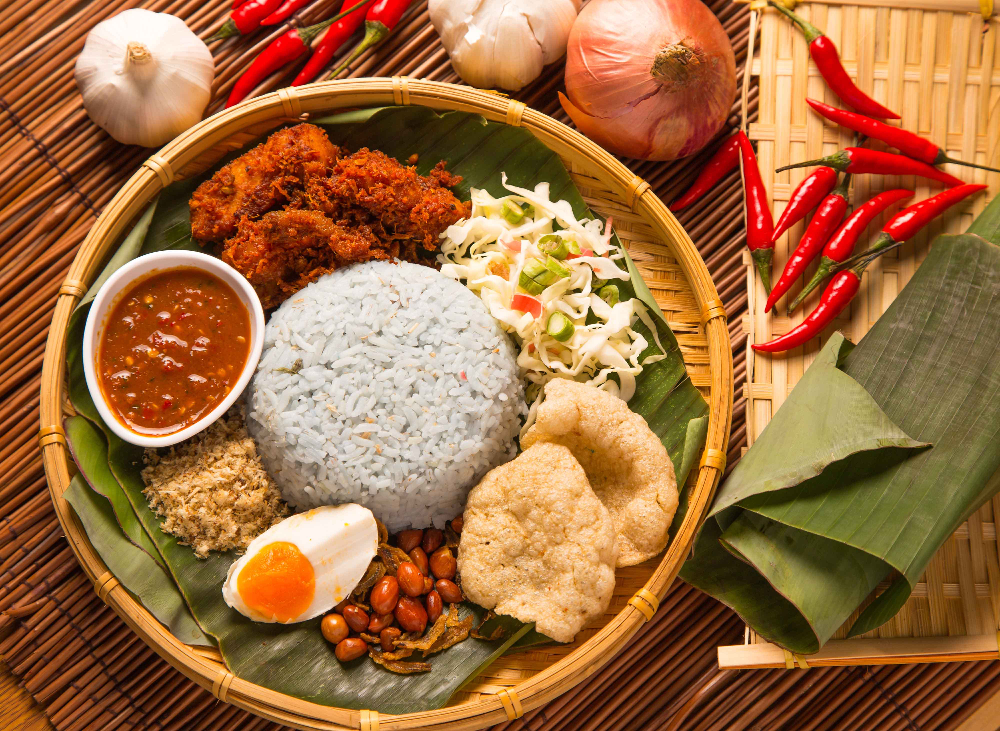

Nasi Kerabu
Perhaps most of people surely know this popular dish that originated from Kelantan. Nasi Kerabu is the dish that consists of variety of herbs, fresh vegetables, condiments, fish, and meats. Also, Nasi Kerabu rice can be in both blue rice and white rice, and it is depend on the cooker. So, let's try the recipe!

PREP TIME : 30 minutes
COOK TIME : 1 Hours 5 minutes
TOTAL TIME : 1 Hours 35 minutes
INGREDIENTS
- 1 salted egg
- 6 fish crackers
- 1/2 cup daun kesum / polygonum / Vietnamese mint (5g)
- 1/2 cup mint leaves (5g)
- 6 long beans (75 g)
- 3 oz bean sprouts (trimmed) (85 g)
Fragrant Blue Rice
- 1 cup rice (rinsed and drained) (1 1/3 rice cooker cup / 200g)
- 1 lemongrass (crushed)
- 3 kaffir lime leaves
- 10 dried bunga telang (blue / butterfly pea flower)
- 1 1/4 cup warm water
Kerisik Ikan (Coconut Fish Flakes)
- 1/2 cup grated coconut (50 g)
- 4 oz snapper fillet
- 1/2 tsp salt (divided)
- 1/2 tsp ground pepper
Kuah Tumis (Spiced Sauce)
- 3 red chilies
- 1 inch ginger (30 g)
- 1 clove garlic
- 6 shallots
- 1 lemongrass (slice bottom third into rings)
- 1 tbsp vegetable oil
- 1/2 cup coconut milk (120 ml)
- 1 piece asam gelugor or 2 tsp lime juice
- 1 tsp fish sauce as a substitute for budu (Malay anchovy sauce)
- Salt to taste
- Sugar to taste
Crispy Skin Turmeric Salmon
- 2 pieces salmon (about 4 oz/ 113g each)
- 1/2 tsp salt
- 1 tsp ground turmeric
- 1 tbsp vegetable oil
INSTRUCTIONS
- Bolt salted egg over medium heat for 15 minutes. Remove and when cool enough to handle, cut salted egg into half. Scoop out the two salted egg halves with a spoon.
- Microwave fish crackers on high for 1 minute. Remove and set aside.
Fragrant Blue Rice
- Wash and drain rice in rice cooker insert for 4 to 5 times. Add lemongrass and Kaffir lime leaves.
- Soak bunga telang (blue / butterfly pea flower) in warm water for 15 minutes. Strain blue pea flower water over rice.
- Trasnfer rice cooker insert to the rice cooker. Press the start button to cook rice.
Kerisik Ikan (Coconut Fish Flakes)
- Toast (without oil) grated coconut in a non-stick fry pan, stirring constantly over low heat until the general distribution of the coconut is golden brown. this should take about 8 to 10 minutes. remove and set aside.
- in the same fry pan, cook snapper fillet within 1/4 teaspoon salt and ground pepper. Break up the fish with a spatula. This should take about 10 minutes.
- Grind and pound toasted coconut in a circular motion using a mortar and pestel to release its oil and fragrance. Add fish flakes and remaining 1/4 salt and continue to grind and pound until fine and well mixed.
Kuah Tumis (Spiced Sauce)
- Blend red chilies, ginger, garlic, shallots, and lemongrass with 2 tablespoon of water into a paste.
- Heat vegetable oil in a small saucepan. stir fry spice [paste until fragrant, about 3 t0 4 minutes. pour coconut milk. Add asam gelugor, fish sauce, salt, and sugar. Stir fry until sauce has thicken, another 3 to 4 minutes. Trasnfer to a small bowl.
Crispy Skin Turmeric Salmon
- Prepare salmon as per this recipe - Crispy Skin Turmeric Salmon.
Putting It Together
- Line a serving dish with banana leaf (optional). Place a bowl of fragrant blue rice in the middle.
- Then arrange prepared daun kesum, mint leaves, long beans, bean sprouts, salted egg, fish crackers, kerisik ikan (coconut fish flakes), and crispy skin turmeric salmon around the rice.
- Top rice with 1 to 2 tablespoons of Kuah Tumis (spice sauce).
NUTRITION
- Calorie : 820 kcal